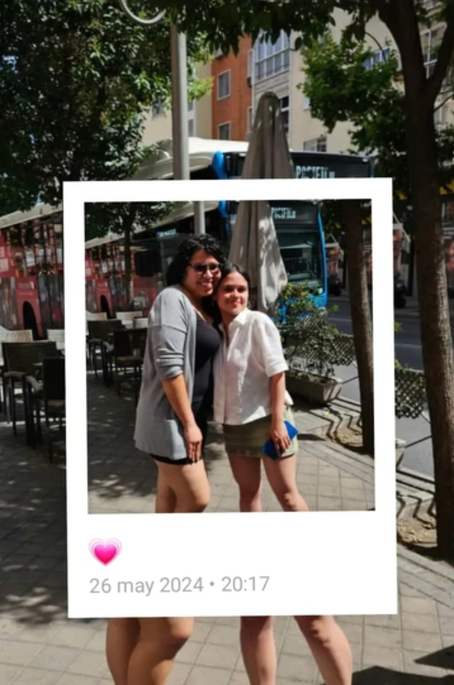
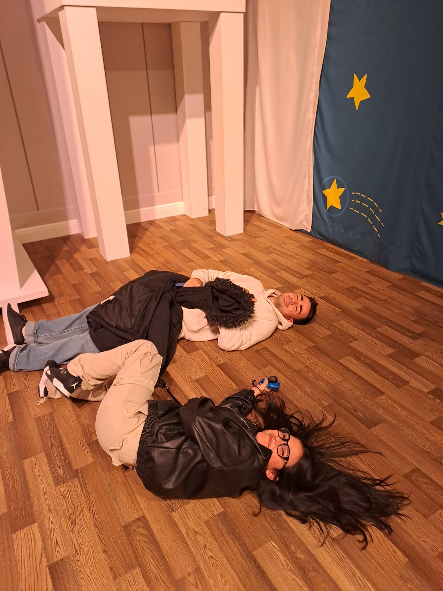

Soy Jesika, estudiante de Ingeniería en Informática en la Universidad Politecnica de Cataluña. Actualmente vivo en Barcelona pero soy de Caracas, Venezuela.
En esta pagina podras encontrar mi información personal y así conocer un poco más de mi y sobre mi trayectoria. Tengo experiencia en programación con Python, Java y C++, así como en desarrollo web con HTML, CSS y JavaScript. También estoy aprendiendo sobre bases de datos y cloud computing.
En mi tiempo libre disfruto de la fotografía, leer sobre tecnología y explorar la ciudad de Barcelona.
Desde que tengo uso de razón, siempre he sentido una gran curiosidad por entender cómo funcionan los sistemas informáticos y qué hay detrás de los procesos que permiten crear aplicaciones web y móviles. Esta curiosidad me ha llevado a participar en distintos proyectos académicos y personales, donde he podido aplicar mis conocimientos y aprender a resolver problemas de manera práctica y eficiente.
Además de mi formación académica, disfruto de actividades creativas y de exploración. En mi tiempo libre me apasiona la fotografía, leer sobre tecnología y descubrir los rincones más interesantes de Barcelona. Creo que estas actividades me permiten mantener un equilibrio entre mi vida profesional y personal, y me inspiran a seguir aprendiendo y creciendo en mi carrera.
¡Escucha mi canción favorita mientras lees y disfruta!
Sobre mi
He crecido en Venezuela, toda mi infancia y adolescencia fue en Caracas, pero debido a la situación crítica del país,
me vi forzada a emigrar a España. Sin embargo, recuerdo con mucho amor el país donde crecí, Caracas es una ciudad llena de alegría, su gente y sus paisajes son únicos.
Una ciudad cálida, donde las personas son amables y te hacen sentir en tu casa seas donde seas.
En lo personal, crecí en La Pastora, donde aprendí el valor de la comunidad, de compartir en familia y de disfrutar las cosas sencillas. Recuerdo los domingos familiares con arepas recién hechas, las fiestas en diciembre llenas de gaitas y hallacas, y las caminatas hacia el Ávila, que siempre ha sido un símbolo de esperanza y orgullo para los caraqueños. Aunque hoy vivo lejos, llevo a Caracas en mi corazón, porque allí están mis raíces y la esencia de quien soy.
Cuando cumplí 15 años, tres meses después, mis padres decidieron que la mejor opción para nuestra familia
era mudarnos a España a buscar una mejor vida. Fue un proceso difícil, ya que en esta parte del mundo no teníamos
familia y esto significaba empezar de cero nuevamente. Sin embargo, fui capaz de adaptarme a un nuevo estilo de vida para tener un mejor futuro.
España no solo me ha abierto las puertas para tener un mejor futuro, sino que también me permitió conocer a personas increíbles en el camino,
quienes me han aportado cosas positivas en mi vida y en mi formación. Mis amigos, quienes siempre han estado presentes en
esos momentos de dificultad. Mi pareja quien ha sido mi mano derecha y me ha motivado a seguir intentándolo aunque en un principio me costaran las asignaturas.
Mi mejor amiga, Salma; con la que comparto vocación y quien estuvo para mi desde bachillerato. Todos me han aportado cosas significativas, ayudandome a ser mejor siempre.
Soy quien soy hoy en día gracias al esfuerzo de mis padres, todo se lo debo a ellos. Por esa razón, estoy comprometida a dar lo mejor de mi siempre,
ya que nuestro esfuerzo no será en vano.


Hobbies
Mis hobbies incluyen disfrutar de películas, escuchar música, pasar tiempo de calidad con mis amigos, mi novio y mi familia, y mantenerme activa y saludable yendo al gimnasio. También me gusta escuchar musica de distintos géneros, aprender cosas nuevas, y explorar actividades creativas como la fotografía o el dibujo. Además, disfruto salir a caminar, estar en contacto con la naturaleza, viajar y descubrir nuevos lugares y culturas, así como probar recetas nuevas y experimentar en la cocina.
Mi selección personal de películas y animes favoritos
The Amazing Spiderman: Película de acción. Para mi, un 10/10.
Cuento con conocimientos en diversas áreas de la informática y llevo cuatro años estudiando la carrera. Aunque al principio me resultó un poco difícil adaptarme al ritmo y a los contenidos de algunas asignaturas, actualmente he logrado mejorar significativamente y me desempeño con mayor seguridad en mis estudios. A lo largo de este tiempo, he adquirido una sólida base teórica y práctica, destacando especialmente en las siguientes asignaturas y áreas de conocimiento:
Redes y Sistemas: He desarrollado conocimientos avanzados en Sistemas Operativos Distribuidos y en Red (calificación: 9,0) y en Seguridad y Administración de Redes (7,0), así como experiencia en Redes de Computadores y Redes Multimedia.
Bases de Datos y Administración de Información: Destaco en Diseño y Administración de Bases de Datos (6,4) y en Estructura de la Información (7,0), donde adquirí competencias en organización, gestión y optimización de datos.
Programación y Desarrollo de Software: Tengo experiencia en proyectos de programación y en Ampliación de Ingeniería del Software, así como en asignaturas de introducción y fundamentos de programación, con competencias en desarrollo de aplicaciones y resolución de problemas.
Arquitectura y Estructura de Computadores: He profundizado en Arquitectura de Computadores (6,8), Estructura de Computadores II (7,9) y Sistemas Operativos (7,7), fortaleciendo mi comprensión sobre hardware y funcionamiento interno de los sistemas.
Inglés avanzado B2: Cuento con una formación de inglés del nivel B2. Realicé estos estudios en la Escuela Oficial de Idiomas en Calella, lo que me ha permitido tener un nivel de inglés fluido.
Otros conocimientos relevantes: Matemática discreta, lógica y álgebra, estadísticas, y fundamentos de física, que complementan mi formación técnica y analítica.
Experiencia Profesional
Aunque no he tenido la oportunidad aún de trabajar en el ámbito de la informática, tengo experiencia en otros sectores.
Para mi cada experiencia es un aprendizaje, y de ahora en adelante, estoy abierta a buscar enriquecer mis conocimientos
sobre programación.
Puesto de trabajo
Empresa
Tiempo de permanencia
Dependienta
Casa de las Carcasas
Agosto 2023 - Septiembre 2023
Dependienta
Caganers
Junio 2024-Septiembre 2024
Barista
Vivari
Junio 2025-Septiembre 2025
Proyecto
Con el objetivo de demostrar mis conocimientos en base de datos, adjunto este video sobre un proyecto que hice junto a mi compañero
Gerard Chaparro. Juntos hicimos una base de datos en SQL de una aplicación de gestión de vuelos de una aerolínea. Desarrollamos la interifice grafica utilizando la herramienta de flask.